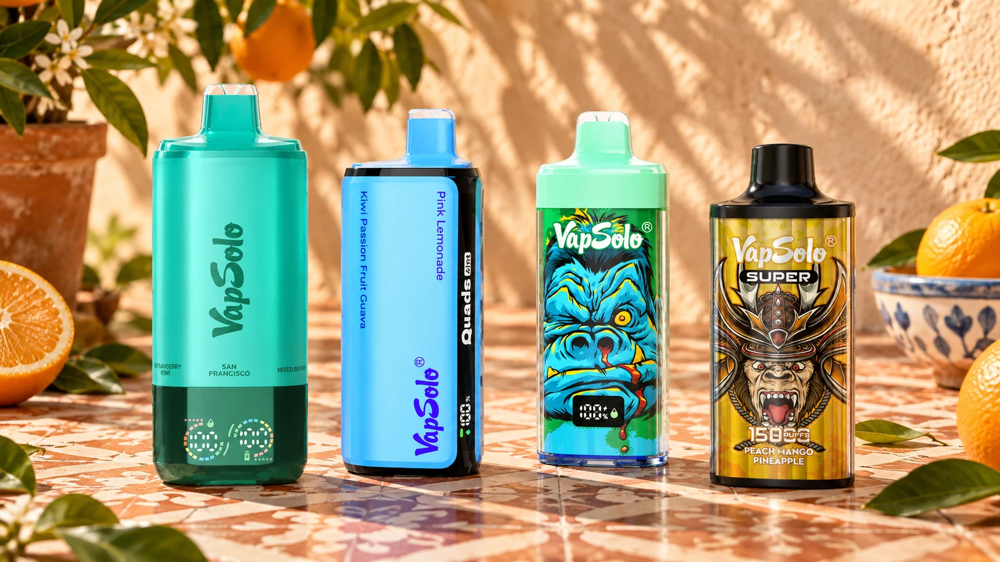

Catálogo informativo para España
VapSolo España: 9 modelos para comparar con criterio.
Compara vapers desechables por sabores, formato y características publicadas. Las caladas anunciadas sirven como orientación; antes de elegir un vaper desechable, revisa la ficha específica del modelo.

Catálogo
Ver catálogo completo →
Nueve modelos, sin mezclas

VapSolo Super 15K
Comprar ahora →
VapSolo Quads 80K
Comprar ahora →
VapSolo King Pro 65K
Comprar ahora →
Las nueve fichas del catálogo
Modelos VapSolo para comparar con criterio
Las caladas son cifras anunciadas por el fabricante o el vendedor: sirven para comparar formatos, no para calcular una duración garantizada. Cada enlace abre la ficha de su modelo, con sabores documentados y datos que conviene confirmar antes de comprar.
SIXER 180KSeis sabores seleccionables en un mismo formato.
Master 70KFlujo de aire ajustable según su ficha publicada.
Twins 20KDos tanques independientes y boquilla giratoria para seleccionar el sabor.
MARS 50KDouble Mesh Coil indicada en la ficha del modelo.
Quads 80KCuatro perfiles de sabor seleccionables.
Super 15KLa ficha de la gama Super anuncia hasta 15.000 caladas.
King Pro 65KControl inteligente de vapor, USB-C y batería de 850 mAh.
Twins Pro 50KDos sabores con hasta 50.000 caladas anunciadas.
Triple Pro 60KTres sabores seleccionables en un solo dispositivo.
Antes de elegir
Cómo elegir un modelo VapSolo
Empieza por el número de sabores que quieres alternar y después compara las caladas anunciadas como una referencia de categoría. El formato no confirma una duración concreta ni sustituye revisar la variante disponible.
- Sabores seleccionables: Twins y Twins Pro tienen 2; Triple Pro, 3; Quads, 4; SIXER, 6.
- Formato: consulta la ficha antes de asumir que una batería recargable permita rellenar líquido.
- Caladas: compara la cifra anunciada, pero no la conviertas en días de uso.
9
modelos documentados
9
guías publicadas
18+
contenido para adultos
Información para adultos
Guía VapSolo para España
El catálogo está pensado para personas adultas que comparan VapSolo desde cualquier punto de España. Reúne las mismas nueve fichas, sus formatos, caladas anunciadas y sabores documentados sin atribuir al sitio tiendas físicas, almacenes ni disponibilidad local.
vapsoloes.com es un catálogo informativo: no vende productos ni confirma existencias. Incluye enlaces comerciales a una tienda externa gestionada por el mismo operador; cuando una ficha muestra «Comprar», ese enlace abre el modelo exacto y la compra se completa allí.